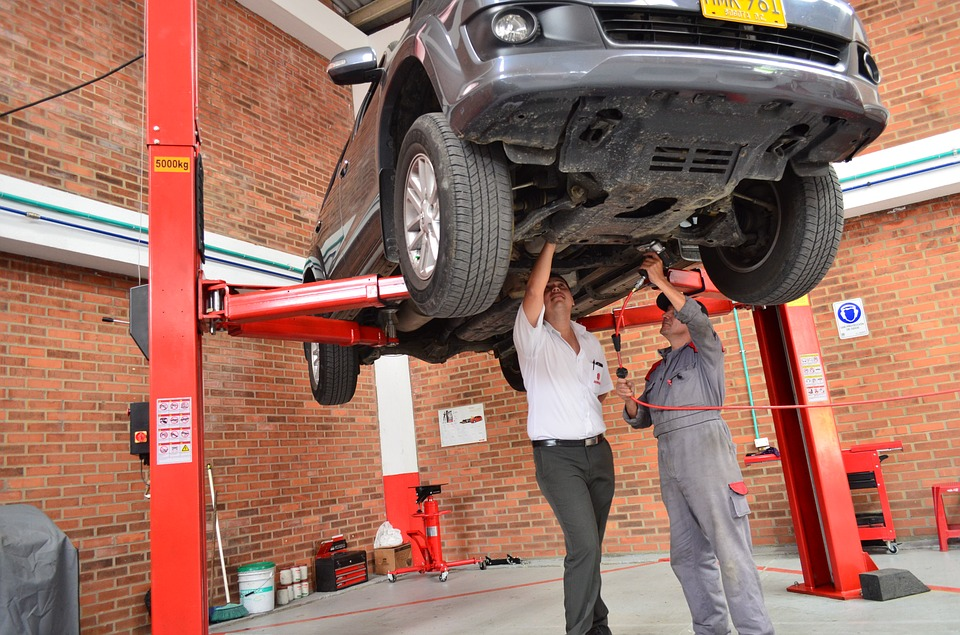

A car repair of a swirl in a Diesel Engine
Some Diesel engines use swirl flaps on cylinders. To close some port at low load, while the others lets air flow into the cylinder to create a swirl. It make emissions and fuel consumption. The swirl flap is sensitive, there have been various problems. In a family of engines the swirl flaps are mostly good. But the rod which connects the flaps, often drop off. The officially suggested repair is to replace the entire rod, and engine needs to be disassembled, the repair costs a fortune. Is this your problem? Contact us!